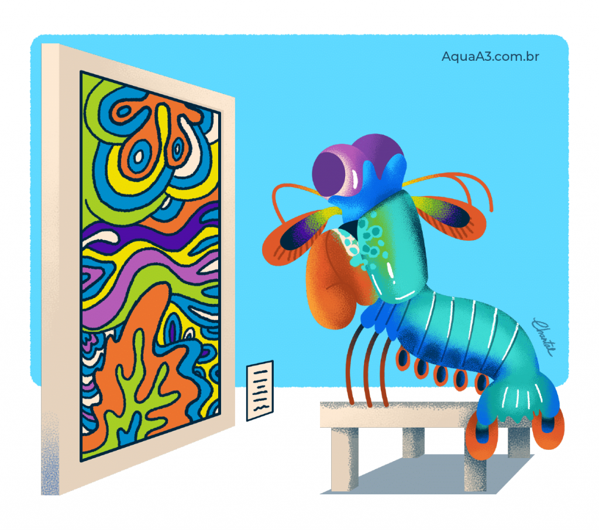

Stomatopoda ou Odontodactylus Scyllarus
| Reino | Filo | Subfilo | Classe | Subclasse | Ordem |
|---|---|---|---|---|---|
| Animalia | Arthropoda | Crustacea | Melacostraca | Hoplocarida | Stomatopoda |
One punch Shrimp

Como você viu no vídeo esse incrível camarão, tem o soco mais devastador do reino animal, a potência que ele chega é a mesma de uma bala calibre 22, além dessa arma super poderosa, o Stopatopoda é um predador sádico que mata sem mótivos, por isso você não encontra eles em aquários, pois, eles matariam qualquer coisa que fosse colocada no seu tanque.
Vincent Van Shrimp
O que um camarão de 30cm poderia ter para causar inveja a qualquer pintor do mundo? simples, sua grande capacidade de percepção de cores, enquanto nós humanos temos 3 tipos de cones receptores de cor (Verde, Azul e Vermelho), o Stomatopoda tem 16!!!!!!!!!! , imaginem as possibilidades, uma noite estrelada de Van Gogh com zilhões de possibilidades de cores diferentes.
Não importa suas habilidades se você não tiver foco
Em conclusão, vimos que o Stomatopoda com um pouco de visão poderia se transformar em uma lenda do boxe maior que Muhamad Ali, ou, virar um pintor fenomenal, criando obras que desafirariam e deixariam os maiores pintores para trás, contudo por não ter foco o Stomatopoda se contenta em ficar em corais espancando seus vizinhos até a morte.